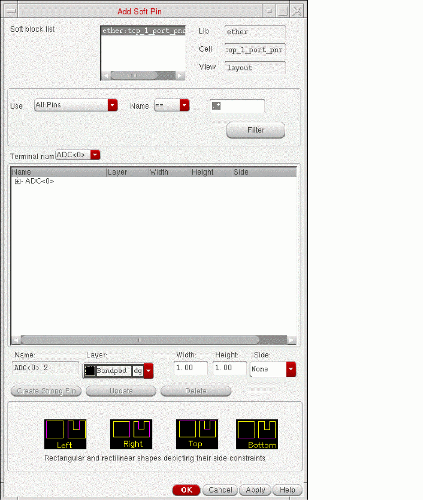

Creating a Soft Pin
- In the layout canvas, select the soft block for which the soft pin is to be created.
-
Click Create – Soft Pins.
The Add Soft Pin form is displayed.
If you selected multiple blocks before you launched the form, all the selected blocks are included in the soft block list at the top of the form. Select the one you want from the list. -
Choose the Terminal name for which you want to create a soft pin from the drop-down list, which by default contains all the terminals in the currently selected block.
You can filter the terminal names that are displayed by typing in the text box and filtering either All Pins or Pins in Selected Set.
To assist you, the canvas shows flight lines to represent the nets between the terminals you select.
The software automatically assigns a name for the new pin. - Choose the pin Layer purpose and specify the Width and Height of the pin in the fields provided.
-
Define the side constraints using an appropriate option from the Side drop-down list.
- You can assign a side (Left, Right, Top, or Bottom) constraint for each pin figure from the Side drop-down. This creates an alignment (side) constraint, which you can view in the Constraint Manager. The alignment constraint, so created, is honored by the pin optimizer.
- Selecting a value None from the Side drop-down implies that the pin figure is not constrained to any particular side.
-
Click Create Strong Pin to create a new pin.
The soft pin is created in the specified block.
Examples
You want to create a soft pin for an existing terminal on a number of soft block instances.
To do this, select the soft block instances and the name of the existing terminal on the selected set to create an extra soft pin for the selected terminal on each instance in the selected set.
Now you want to add a pin for the CLK terminal on instance ||sb1.

After creating another pin for the existing terminal CLK on the instance ||sb1, the CLK net changes as shown below.
Related Topics
Return to top